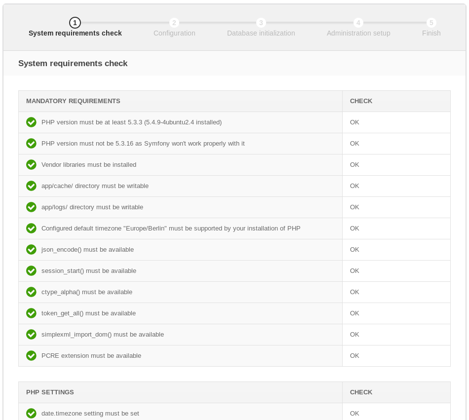
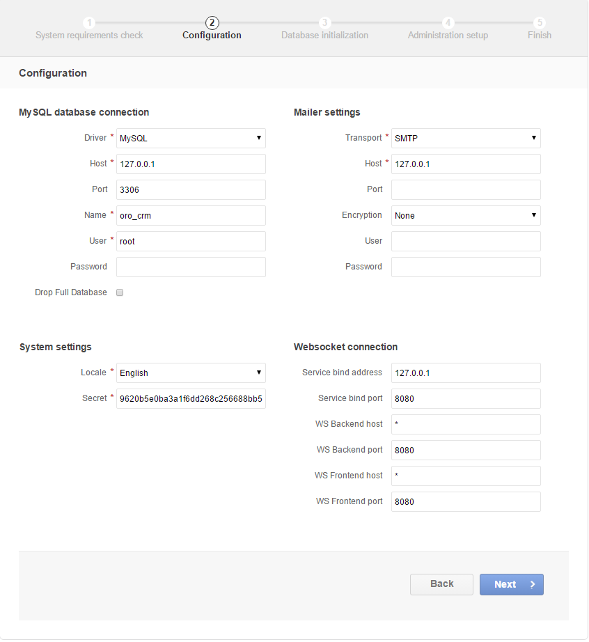
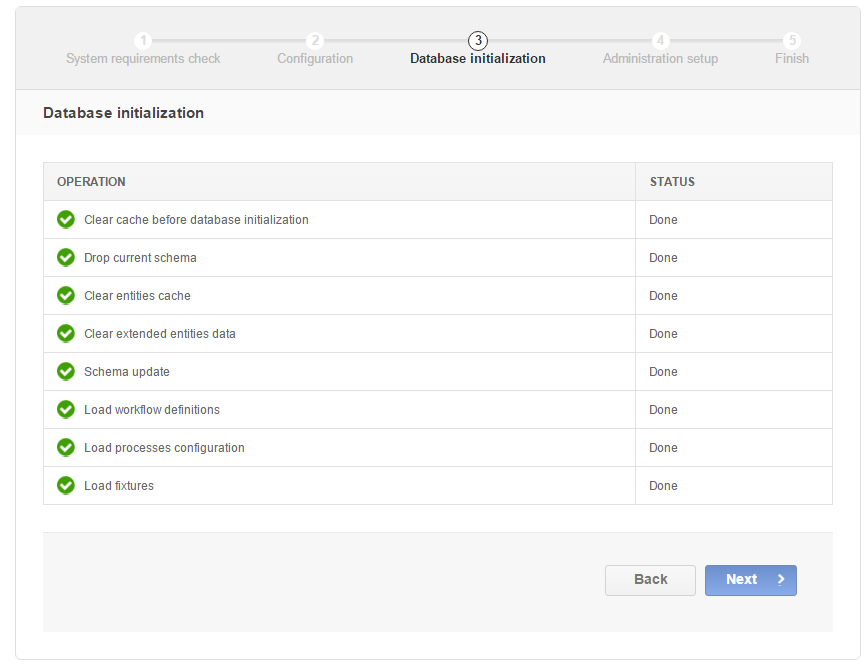
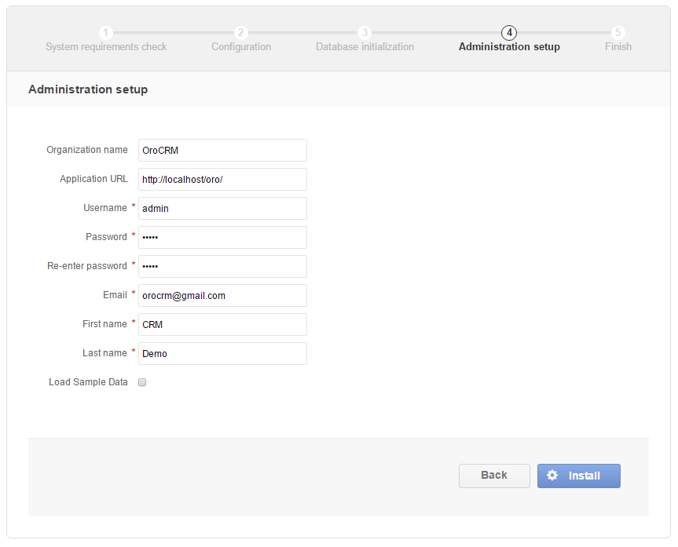
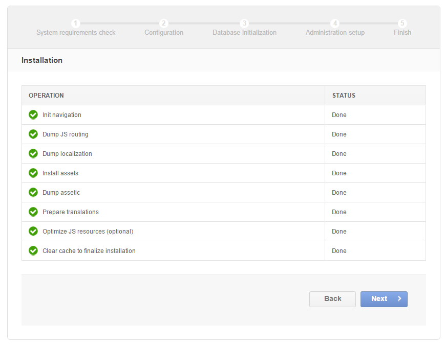
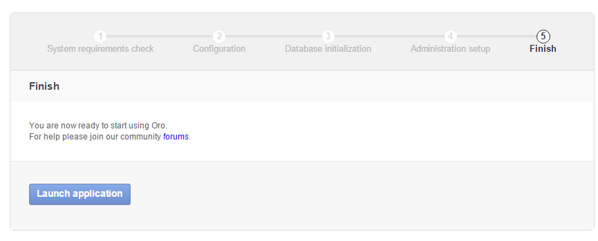

In web browser, open the following URL:
http://<ApplicationServerHost>:<ApplicationServerPort>/install.php
Click Begin Installation on the Welcome to Oro Installer screen.
During the System requirements check, the installation wizard will check the system configuration:
Ensure that system requirements are met (status indicators should be green for all items) and click Next.
The application configuration page emerges.
The values defined in the configuration parameters will be filled in automatically, but they can be changed.
For the Configuration, provide the following information:
For Database connection:
- provide a driver (either MySQL or PostgreSQL),
- enter the database server host and port,
- enter the database name (Name), user name and password for OroCommerce authentication with the database server.
- For re-installation, specify whether OroCommerce should remove the existing database table contents. Available options are None, Application Tables, All Tables. The default value is None.
In System settings, specify the system language and the secret for OAuth 2 client authorization.
In Web settings, provide the prefix that will be attached to the application URL to access the OroCommerce configuration and administration application (backend).
In Mailer settings, select the transport for the emails OroCommerce will be sending. Available options are PHP mail, SMTP, and sendmail. When you select the SNMP, please, provide the following mail server connection details: host, port, encryption (None, SSL, TLS), user name, and password.
In the Websocket connection, set up your web service network configuration: service bind address and port, WS backend and frontend host/post.
Once you are happy with the information you have provided, click Next.
The Database initialization starts automatically.
Hint
If something goes wrong and a failure occurs, you can check error logs in the app/logs/oro_install.log file. Fix the errors, click the Back button and repeat.
Click Next when status turns green for every step.
The administration step appears.
At the Administration step, provide the following information:
Organization name
Application URL (e.g. http://commerce.MyCompany.com)
Create the first system administrator by providing a user name, a password (with confirmation), an email, and their first and last name.
If necessary, select the Load Sample Data check box.
Note
Load Sample Data only for learning purposes, test deployments and pre-production deployments. In this mode, OroCommerce is populated with sample data that help you unlock all the features so that you can quickly test the system after re-configuration or customization.
Finally, click Install and wait until the status for all operations turns green.
Hint
If something goes wrong and a failure occurs, you can check error logs in the app/logs/oro_install. Fix the errors, click Back and repeat the installation step.
Once installation is complete, click Next.
At the Finish step, click Launch Application to open the OroCommerce Administration Login screen.
The URL will be similar to the following: http://<hostname>:<port>/app.php/admin/user/login. To log in, use credentials you provided for the first system administrator.